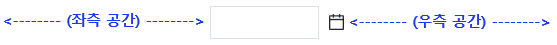
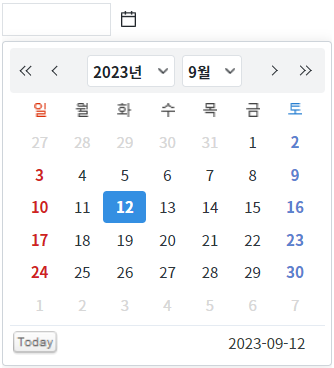
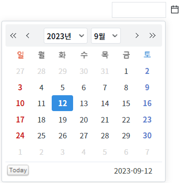
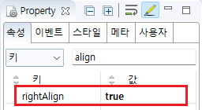

[InputCalendar] 달력의 표시 기준을 입력 필드의 좌측 또는 우측으로 설정하기
1개요
InputCalendar의 속성 'rightAlign'의 설정 값에 따른 기능을 비교하는 예제입니다. 이 속성은 화면의 달력 아이콘 클릭하면 생성되는 달력이 표시되는 위치(좌,우)의 기준을 설정하는 기능을 제공합니다. 설정 값에 따라 입력 필드를 기준으로 좌측 또는 우측으로 달력을 표시할 수 있습니다. 단, InputCalendar의 좌측 또는 우측의 공간(너비)이 최소한 달력의 너비(width)만큼은 되어야 동작합니다. 그렇지 않으면 표시 위치가 자동 조절됩니다.
설정 값에 따른 동작은 다음과 같습니다.
false: [default] 입력 필드를 기준으로 좌측에 달력이 표시됩니다.
true: 입력 필드를 기준으로 우측에 달력이 표시됩니다.
2구현된 기능
달력을 입력 필드의 좌측을 기준으로 표시하기
달력을 입력 필드의 우측을 기준으로 표시하기
3예제 테스트 방법
3.1달력을 입력 필드의 좌측을 기준으로 표시하기
STEP 1. 초기 상태를 확인합니다.
예제 영역 [(기본 설정 값) 달력을 입력 필드의 좌측을 기준으로 표시하기]에 구성된 InputCalendar를 확인합니다. 기능 비교를 위해 InputCalendar가 중앙에 위치되었습니다.이 기능은 실행된 예제 화면의 너비(width)가 최소 500px 이상인 경우에만 정상적인 기능 비교가 가능합니다.
그림 1.브라우저(Chrome) 실행 예시

STEP 2. 달력 아이콘을 클릭합니다.
InputCalendar의 달력 아이콘을 클릭합니다.
그림 2.브라우저(Chrome) 실행 예시

STEP 3. 실행된 결과를 확인합니다.
입력 필드의 좌측을 기준으로 달력이 표시됩니다.
그림 3.브라우저(Chrome) 실행 예시

3.2달력을 입력 필드의 우측을 기준으로 표시하기
STEP 1. 초기 상태를 확인합니다.
예제 영역 [달력을 입력 필드의 우측을 기준으로 표시하기]에 구성된 InputCalendar를 확인합니다. 기능 비교를 위해 InputCalendar가 중앙에 위치되었습니다.이 기능은 실행된 예제 화면의 너비(width)가 최소 500px 이상인 경우에만 정상적인 기능 비교가 가능합니다.
그림 4.브라우저(Chrome) 실행 예시
STEP 2. 달력 아이콘을 클릭합니다.
InputCalendar의 달력 아이콘을 클릭합니다.
그림 5.브라우저(Chrome) 실행 예시

STEP 3. 실행된 결과를 확인합니다.
입력 필드의 우측을 기준으로 달력이 표시됩니다.
그림 6.브라우저(Chrome) 실행 예시

4구현 예시
4.1달력을 입력 필드의 우측을 기준으로 표시하기
InputCalendar의 속성을 정의합니다.
[필수] rightAlign="true"
(옵션 설명)
- false: [default] 입력 필드를 기준으로 좌측에 달력이 표시됩니다.
- true: 입력 필드를 기준으로 우측에 달력이 표시됩니다.
그림 7.웹스퀘어5 SP5 스튜디오의 Property View(속성창) 예시

[소스 코드 예시]
<!-- inputCalendar 의 소스 본문 예시 --> <w2:inputCalendar rightAlign="true"> </w2:inputCalendar>
5주요 API
rightAlign
6참고 문서
[웹스퀘어5 SP5 개발 가이드] InputCalendar
링크 : https://docs1.inswave.com/sp5_user_guide/8df43d1f59fab704#579244ff7483b50c